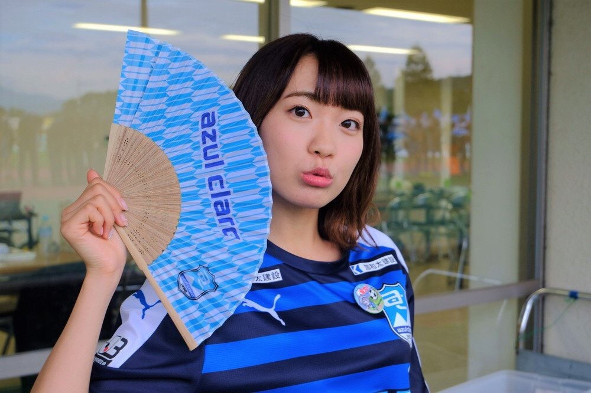
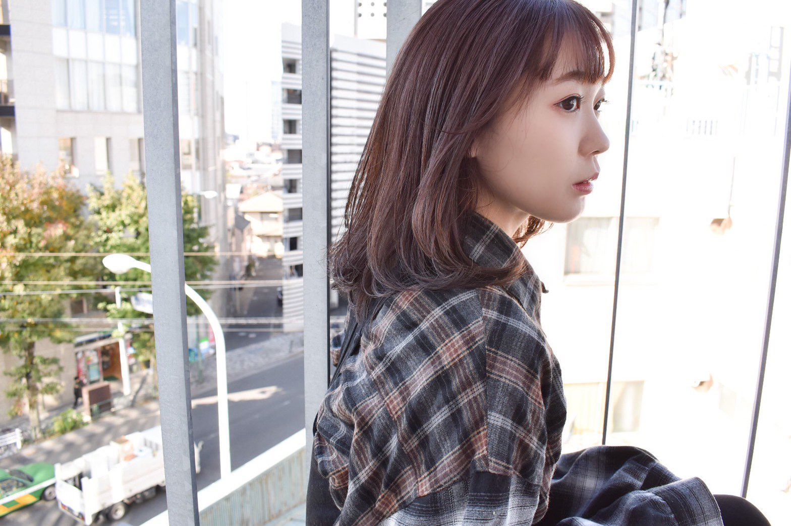

人物介紹
日本的女性聲優、歌手。埼玉縣出身，血型A型，經紀公司為Holy Peak。
曾以「肥田ゆちか」的名義進行演藝活動。 在家中排行老么（上面有一個姐姐和兩個哥哥） 身高是150.5cm，著重強調過表示這是尊嚴的0.5cm。 嘴角有五顆痣
在Aqours團體中是帥哥和Yosoro的擔當。 在Aqours 4th Live的場刊中表示自己最喜歡的μ's成員是矢澤妮可。原話：被nico的可愛所吸引！ 在Aqours的各種活動中表現相當元氣，喜歡亂蹦亂跳曾經在一次生放送中因為太鬧了而被杏樹瞪了一眼（笑），之後就安分了不少。
本人承認的暱稱是“しゅかしゅー”（咻卡咻），由小林愛香所取，在推特上發布過“しゅかしゅー”的發音教學視頻。和NGT48的荻野由佳關係很好，是從初中時期就認識的好姊妹。
2019年6月12日在自己的推特上宣布個人出道，並將在同年8月14日推出第一張迷你專輯「くつひも」。
個性
是個很非常活潑的熊孩子，隨時隨地都能保持很燦爛的微笑。
喜歡的食物是炸麵糰和漢堡，討厭的食物是生的東西和蕃茄。 曾經提到不吃魚生但能接受鮭魚子。
作品
電視動畫
2016
2017

LoveLive! Sunshine!! 第二季（渡邊曜）
2019
喜歡本大爺的竟然就妳一個？（山茶花／真山亞茶花）2019年8月14日 1st迷你專輯 くつひも